Se construyó un laboratorio virtual de dos máquinas en una red aislada: un servidor Ubuntu con Apache, OpenSSH y UFW, y una máquina Kali Linux con Nmap y cliente SSH. En el servidor se prepararon cinco debilidades de categorías distintas (acceso remoto, permisos, red, servicios innecesarios y mantenimiento), se conservó una instantánea del estado inicial y se realizó el diagnóstico con Nmap y un acceso SSH no autorizado como root. Después se aplicaron cinco controles, se revisaron los registros de autenticación, se creó un respaldo, se restauró un archivo de prueba y se diseñó la validación final para comparar el antes y el después sin afectar el sitio web ni la administración legítima. Las comprobaciones que cuentan con captura figuran como «Evidenciado»; las demás se ejecutan en directo durante la sustentación, como exige la actividad.
| Aspecto | Estado inicial | Estado final | Evidencia |
|---|---|---|---|
| Puertos accesibles desde la red | 21, 22 y 80 abiertos, sin filtrado | Solo 22 y 80 (resultado esperado) | E06 → P2 (en vivo) |
| Acceso SSH directo como root | Permitido (se obtuvo una consola root) | Rechazado | E08 → E17 |
| Permisos del sitio web | 777 (cualquiera escribe) | 755, dueño www-data | E03 → E12, P4 |
| Firewall | Desactivado | Activo: deniega lo entrante salvo 22 y 80 | E03 → E12, P3 |
| Actualizaciones de seguridad | 227 pendientes (133 de seguridad) | Aplicadas (conteo final en vivo) | E08 → E09, P5 (en vivo) |
evidencias/ con el mismo identificador al inicio del nombre. Las horas de los registros del servidor están en UTC; la hora local de Colombia es UTC−5.| Integrante | Actividades realizadas |
|---|---|
| Juan Camilo Nieto Arboleda | Servidor Ubuntu: preparación del estado inicial, controles, respaldo y restauración; documentación de los registros. |
| Juan Diego Vasquez | Máquina Kali: diagnóstico con Nmap, pruebas SSH, copia externa del respaldo, validación y armado del informe. |
Café Montaña S.A.S. es una organización ficticia que necesita un servidor que publique su sitio web institucional y que pueda administrarse a distancia. Su sitio es una página sencilla con la presentación de la empresa, su catálogo de productos y datos de contacto ficticios. El servidor funciona, pero fue entregado con configuraciones inseguras que podrían permitir accesos no autorizados, exposición de información o pérdida de archivos. El equipo asume el papel de encargado de evaluarlo y protegerlo sin afectar los servicios que la organización necesita.
| Elemento | Descripción |
|---|---|
| Función del servidor | Publicar el sitio web (Apache, 80/tcp) y permitir la administración remota (OpenSSH, 22/tcp). |
| Usuarios | Visitantes del sitio (solo lectura por HTTP). Administrador del servidor: cuenta juan, con acceso por SSH y sudo. La cuenta root no debe usarse de forma remota. |
| Información a proteger | Contenido del sitio (/var/www/html: integridad y disponibilidad); configuración de SSH (/etc/ssh/sshd_config) y del firewall (/etc/ufw/); credenciales de administración; registros de autenticación (/var/log/auth.log); el respaldo. |
| Accesos necesarios | HTTP 80/tcp para cualquier equipo de la red. SSH 22/tcp para el administrador con un usuario sin privilegios directos de root. Todo lo demás debe quedar bloqueado. |
| Restricciones del laboratorio | Red aislada; únicamente datos ficticios; sin pruebas sobre equipos institucionales, sin malware real y sin ataques de denegación de servicio. |
| Condiciones del docente | Se trabajó con las condiciones del enunciado del proyecto; no se asignaron condiciones adicionales. |
Diagrama 1. Laboratorio: dos máquinas virtuales en una red «solo-anfitrión» sin salida a Internet (archivo informe/diagrama_red.svg).
| Elemento | Detalle |
|---|---|
| Servidor | VM UBUNTU_VIRTUAL (nombre de host ubuntu) en Oracle VirtualBox. |
| Sistema operativo | Ubuntu 26.04.1 LTS, kernel 7.0.0-31-generic (E08). Tras la actualización queda instalado el kernel 7.0.0-42-generic (E12). La instalación incluye entorno de escritorio (se aprecia en E03 y E09). |
| Red | Interfaz enp0s3, 192.168.56.101/24 asignada por DHCP de VirtualBox; MAC 08:00:27:ce:34:b4 (E01). |
| Usuarios relevantes | juan (administrador con sudo); root (con login SSH habilitado en el estado inicial y bloqueado en el final). |
| Máquina de pruebas | kali-linux-2026.1-virtualbox-amd64, IP 192.168.56.102 (aparece como origen en el registro E14), Nmap 7.98 y cliente OpenSSH/SCP. |
| Hipervisor y red | Oracle VirtualBox; ambas VM con «adaptador solo-anfitrión» (host-only), red 192.168.56.0/24 aislada. |
| Servicio | Versión | Puerto | Función | Necesario | Estado final |
|---|---|---|---|---|---|
| Apache HTTP Server | 2.4.66 | 80/tcp | Sitio web de la organización | Sí | Activo, permitido en UFW |
| OpenSSH Server | 10.2p1 | 22/tcp | Administración remota | Sí | Activo, root bloqueado |
| vsftpd (FTP) | 3.0.5 | 21/tcp | Transferencia de archivos | No | Detenido y deshabilitado |
| UFW (firewall) | 0.36.2 | — | Filtrado de conexiones entrantes | Sí | Activo al arrancar |
| tar + scp | — | 22/tcp | Respaldo y copia externa | Sí | En uso (sección 6) |
Sobre el servidor se instalaron OpenSSH, Apache (con una página sencilla de la organización) y vsftpd, y se introdujeron cinco debilidades de configuración de cinco categorías distintas, por encima del mínimo de tres que pide la actividad. Después se apagó la máquina y se conservó una instantánea del estado inicial.
| ID | Categoría | Debilidad preparada | Cómo se creó |
|---|---|---|---|
| H1 | Acceso remoto | Login SSH directo como root | En /etc/ssh/sshd_config: PermitRootLogin yes, y reinicio de ssh. Se definió una clave de laboratorio para root (no se publica en este informe). |
| H2 | Permisos | Sitio web con permisos 777 | sudo chmod -R 777 /var/www/html (E03) |
| H3 | Red / perímetro | Firewall desactivado | sudo ufw disable (E03) |
| H4 | Servicios innecesarios | Servidor FTP expuesto | sudo apt install vsftpd -y (E04) |
| H5 | Mantenimiento | Sistema sin actualizar | No se ejecutó apt upgrade tras la instalación (se comprueba en E08). |
sshd_config con PermitRootLogin yes no se capturó en pantalla; su efecto queda demostrado por el acceso exitoso como root (E08) y por el registro de autenticación (E14).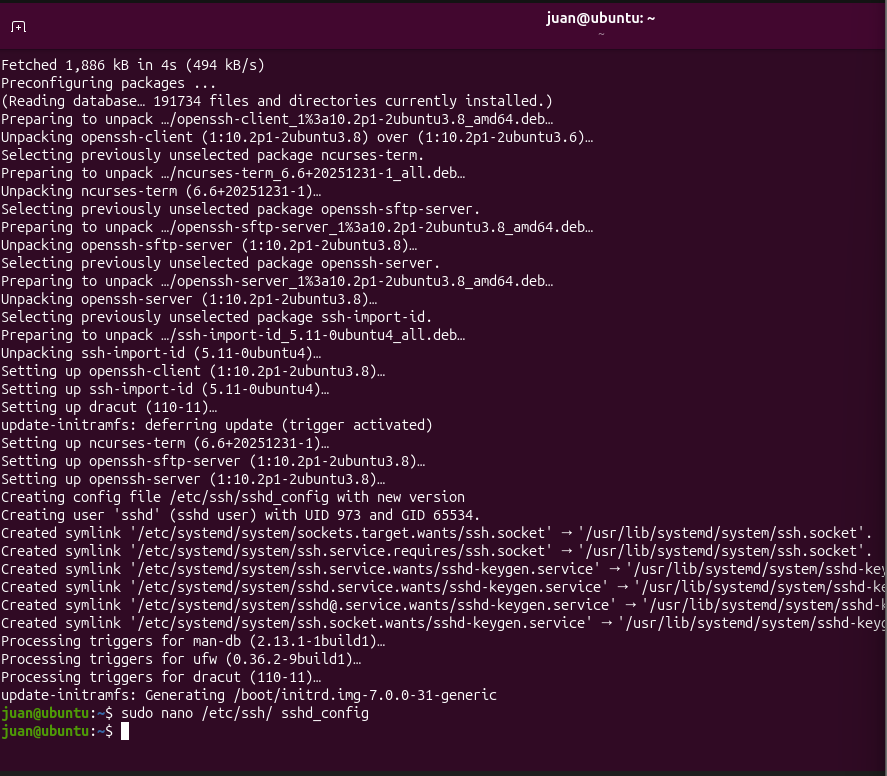
Comando: sudo apt install openssh-server
Qué se observa: Se despliega openssh-server 1:10.2p1-2ubuntu3.8, se crea el usuario de separación de privilegios sshd y las unidades ssh.service / ssh.socket. Las dos últimas líneas muestran un error de tipeo al abrir nano (ver incidencia I01).
Qué demuestra: Cumple el requisito de OpenSSH para la administración remota del servidor.
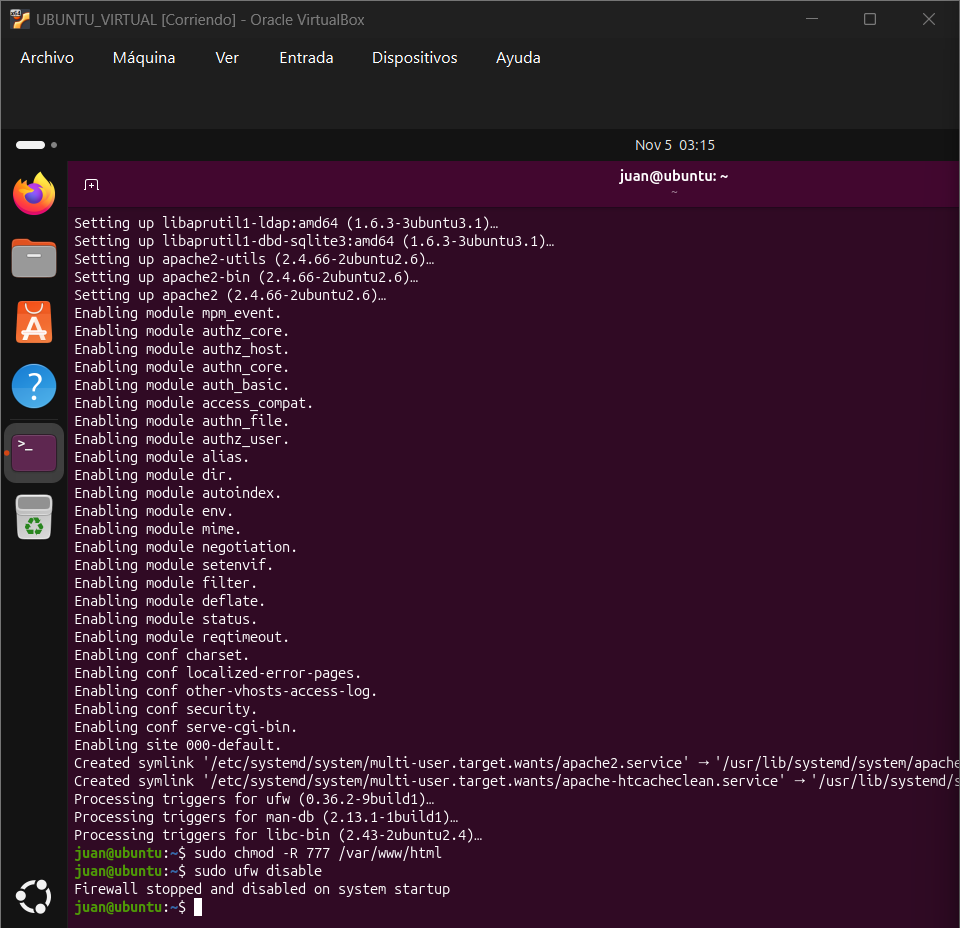
Comando: sudo chmod -R 777 /var/www/html && sudo ufw disable
Qué se observa: Cierre de la instalación de apache2 2.4.66 (módulos y sitio 000-default habilitados), seguido de sudo chmod -R 777 /var/www/html y sudo ufw disable, que responde «Firewall stopped and disabled on system startup».
Qué demuestra: Documenta la creación de las debilidades H2 (permisos 777) y H3 (firewall desactivado) sobre un servidor web operativo.
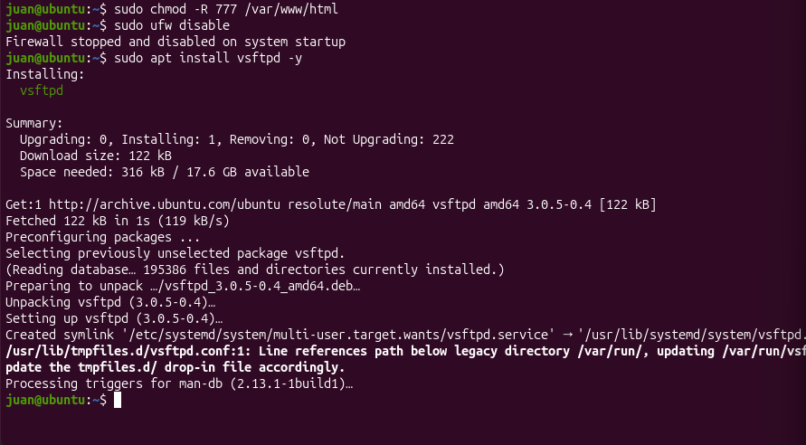
Comando: sudo apt install vsftpd -y
Qué se observa: Se instala vsftpd 3.0.5-0.4 y se crea vsftpd.service habilitado en el arranque (multi-user.target.wants).
Qué demuestra: Documenta H4: un servicio FTP que el escenario no necesita (el servidor solo debe publicar web y permitir administración remota).
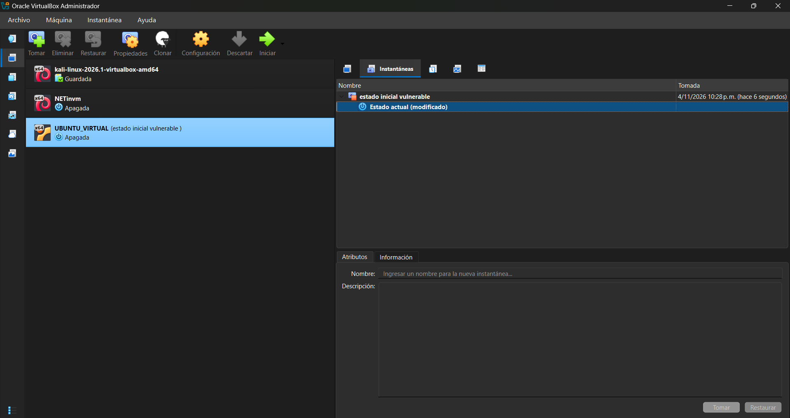
Comando: VirtualBox → Instantánea → Tomar
Qué se observa: La VM UBUNTU_VIRTUAL muestra la instantánea «estado inicial vulnerable» tomada el 4/11/2026 a las 10:28 p. m. A la izquierda aparecen también la máquina de pruebas kali-linux-2026.1-virtualbox-amd64.
Qué demuestra: Conserva el estado inicial como exige la actividad: permite volver a él y repetir el diagnóstico.
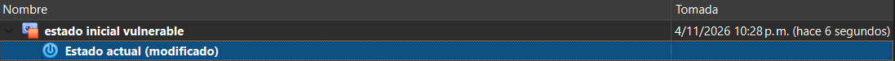
Qué se observa: Recorte de E05 (derivado, sin alterar): la instantánea «estado inicial vulnerable», «Tomada» el 4/11/2026 10:28 p. m., y debajo «Estado actual (modificado)».
Qué demuestra: Confirma el nombre y la hora exactos de la instantánea del estado inicial.
Con las dos máquinas en la red solo-anfitrión se identificó la IP del servidor, se escaneó con Nmap desde Kali, se intentó un acceso SSH como root y se revisó el aviso de actualizaciones pendientes. Para cada hallazgo se registra el activo afectado, el riesgo, la prioridad y el control propuesto. Un puerto abierto, por sí solo, no demuestra una vulnerabilidad: se evalúa si el servicio es necesario y qué exposición añade.
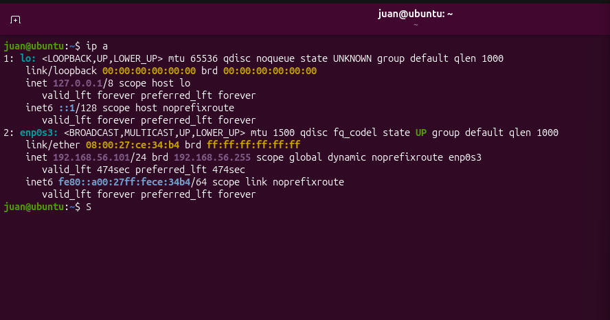
Comando: ip a
Qué se observa: Interfaz enp0s3 con 192.168.56.101/24 (asignada por DHCP, scope global dynamic) y MAC 08:00:27:ce:34:b4.
Qué demuestra: Identifica el activo evaluado (la IP objetivo de Nmap y SSH) y confirma que está en la red aislada 192.168.56.0/24.
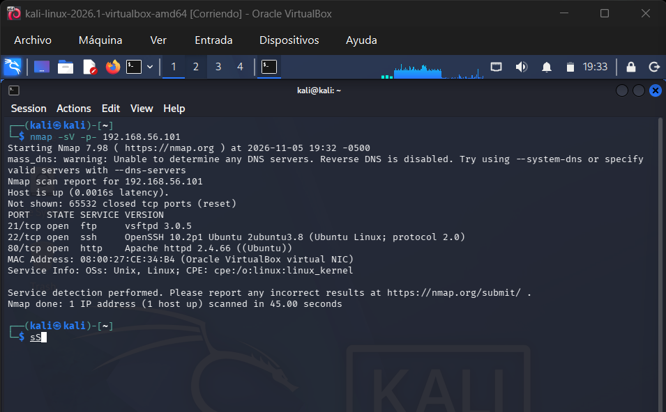
Comando: nmap -sV -p- 192.168.56.101
Qué se observa: Desde Kali, Nmap 7.98 informa 3 puertos abiertos: 21/tcp ftp vsftpd 3.0.5, 22/tcp ssh OpenSSH 10.2p1 Ubuntu 2ubuntu3.8 y 80/tcp http Apache httpd 2.4.66. Los otros 65 532 puertos están cerrados («reset»). Duración: 45 s.
Qué demuestra: Los puertos cerrados responden con reset, es decir, no hay filtrado: el firewall está apagado. Un puerto abierto por sí solo no es una vulnerabilidad: 22 y 80 son necesarios; el 21 no lo es y por eso se hace hallazgo (H4).
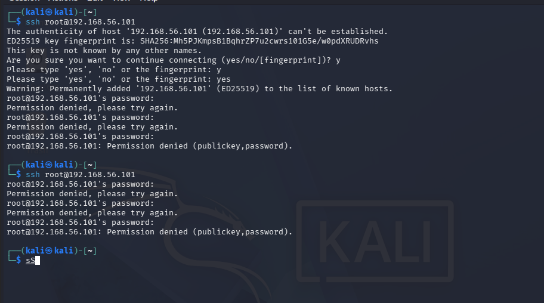
Comando: ssh root@192.168.56.101
Qué se observa: Primera conexión: Kali muestra la huella ED25519 del servidor, se acepta («yes») y se agrega a known_hosts. Dos rondas de tres intentos terminan en «Permission denied (publickey,password)».
Qué demuestra: El servidor atiende a root por SSH desde la red. Estos rechazos se deben a una contraseña incorrecta (el registro E14 los muestra como Failed password for root) y no a un control de configuración: no son evidencia de protección; ver E17 para la prueba posterior a los controles.
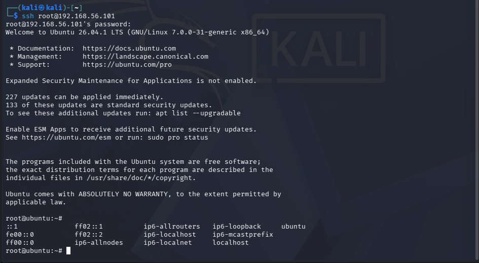
Comando: ssh root@192.168.56.101
Qué se observa: Tras autenticarse con la contraseña de root (no visible), aparece el banner de Ubuntu 26.04.1 LTS (kernel 7.0.0-31-generic), el aviso «227 updates can be applied immediately. 133 of these updates are standard security updates» y el prompt root@ubuntu:~#.
Qué demuestra: Demuestra H1 explotada: un equipo de la red obtiene una consola con privilegios totales por SSH. También evidencia H5: 227 actualizaciones pendientes, 133 de seguridad.
| ID | Hallazgo y activo afectado | Riesgo | Prioridad | Control propuesto | Evidencia |
|---|---|---|---|---|---|
| H1 | Login SSH directo como root habilitado. Activo: OpenSSH y cuenta root. | Cualquier equipo de la red puede probar contraseñas contra la cuenta de máximo privilegio; un acierto da control total del servidor. | Alta | C3: PermitRootLogin no. | E08, E14 |
| H2 | Sitio web con permisos 777. Activo: /var/www/html. | Cualquier cuenta local o proceso comprometido puede modificar o borrar el sitio, o subir código que Apache serviría. | Alta | C4: dueño www-data y permisos 755. | E03 |
| H3 | Firewall UFW desactivado. Activo: todo el host. | Todo servicio que escuche, hoy o en el futuro, queda expuesto sin filtro; se pierde la defensa en profundidad. | Alta | C5: denegar lo entrante por defecto y permitir solo 22 y 80. | E03, E06 |
| H4 | Servicio innecesario vsftpd (FTP, 21/tcp). Activo: servicio FTP. | El escenario no requiere FTP; amplía la superficie de ataque y el FTP clásico transmite credenciales y datos sin cifrar. | Media | C2: detener y deshabilitar el servicio. | E04, E06 |
| H5 | Sistema sin actualizar: 227 paquetes pendientes, 133 de seguridad. Activo: paquetes del sistema operativo. | Vulnerabilidades ya conocidas y corregidas por el fabricante siguen presentes en el servidor. | Alta | C1: apt update && apt upgrade. | E08 |
Criterio de prioridad: alta cuando el hallazgo permite tomar el control, modificar el sitio o deja sin protección a todo el host; media cuando amplía la superficie de ataque sin ser, por sí solo, un acceso directo. Los puertos 22 y 80 también estaban abiertos, pero son servicios legítimos del escenario y no se tratan como hallazgos por estar abiertos.
Cada control responde a un hallazgo. El sitio web (80/tcp) y la administración legítima (22/tcp con un usuario sin privilegios de root) debían seguir funcionando; por eso las reglas de UFW para 22 y 80 se crean antes de activar el firewall.
| ID | Hallazgo | Control | Comando o configuración | Por qué este control |
|---|---|---|---|---|
| C1 | H5 | Actualizar el sistema | sudo apt update && sudo apt upgrade -y | Instala las correcciones de seguridad publicadas. Instaló el kernel 7.0.0-42 (E12), que se activa al reiniciar. |
| C2 | H4 | Deshabilitar el servicio innecesario | sudo systemctl stop vsftpd && sudo systemctl disable vsftpd | Detener cierra el puerto 21 ahora; deshabilitar evita que arranque con el sistema. Se conserva el paquete para poder revertir en el laboratorio. |
| C3 | H1 | Bloquear el login SSH directo como root | PermitRootLogin no en sshd_config y sudo systemctl restart ssh | Obliga a entrar con un usuario sin privilegios y escalar con sudo, que además queda registrado. |
| C4 | H2 | Corregir permisos del sitio | sudo chown -R www-data:www-data /var/www/htmlsudo chmod -R 755 /var/www/html | Apache es el dueño legítimo; el resto solo puede leer y recorrer los directorios. |
| C5 | H3 | Configurar el firewall | ufw default deny incomingufw default allow outgoingufw allow 22/tcp · ufw allow 80/tcpufw enable | Bloquea todo lo entrante salvo SSH y HTTP; la salida queda libre para actualizaciones y respuestas del sitio. El puerto 21 queda bloqueado aunque el servicio se reactivara. |
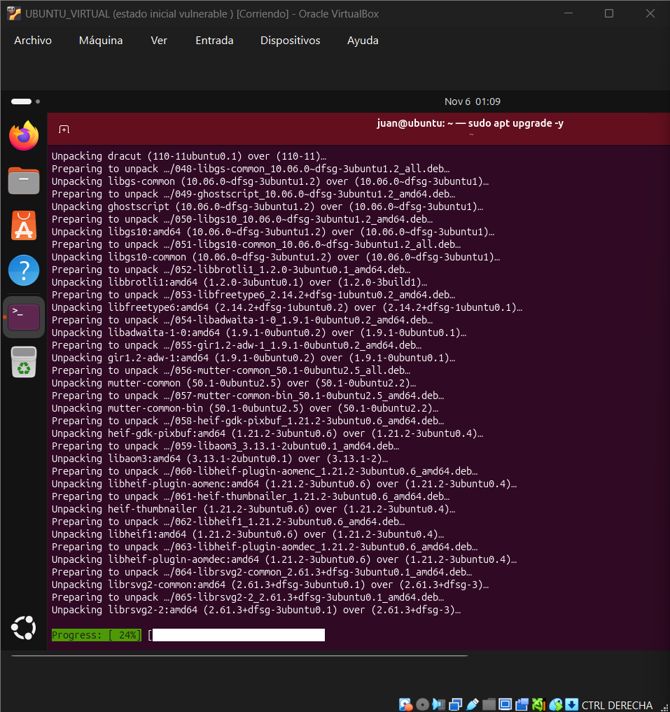
Comando: sudo apt upgrade -y
Qué se observa: La terminal muestra sudo apt upgrade -y desempaquetando paquetes (progreso 24 %). El reloj de la VM marca Nov 6 01:09 (UTC) y VirtualBox indica «estado inicial vulnerable» como base de la VM.
Qué demuestra: Muestra la aplicación del control de parcheo. El resultado final se comprueba con apt list --upgradable (evidencia P5 (en vivo)).
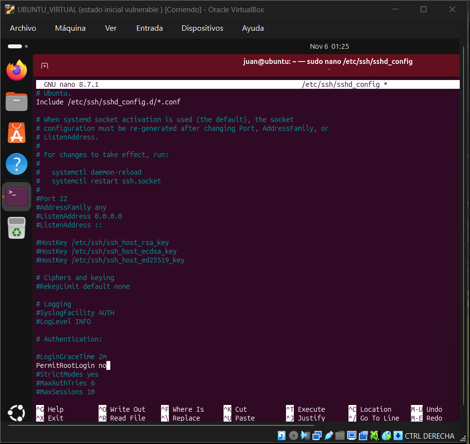
Comando: sudo nano /etc/ssh/sshd_config
Qué se observa: El editor nano 8.7.1 muestra /etc/ssh/sshd_config y, en la sección Authentication, la línea PermitRootLogin no sin el # inicial.
Qué demuestra: Es la directiva que impide el inicio de sesión SSH directo como root; la administración queda a cargo de un usuario sin privilegios que usa sudo.
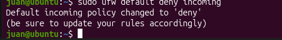
Comando: sudo ufw default deny incoming
Qué se observa: UFW responde «Default incoming policy changed to 'deny'».
Qué demuestra: Establece el principio de mínimo privilegio en red: todo lo entrante se bloquea salvo lo que se permita explícitamente.
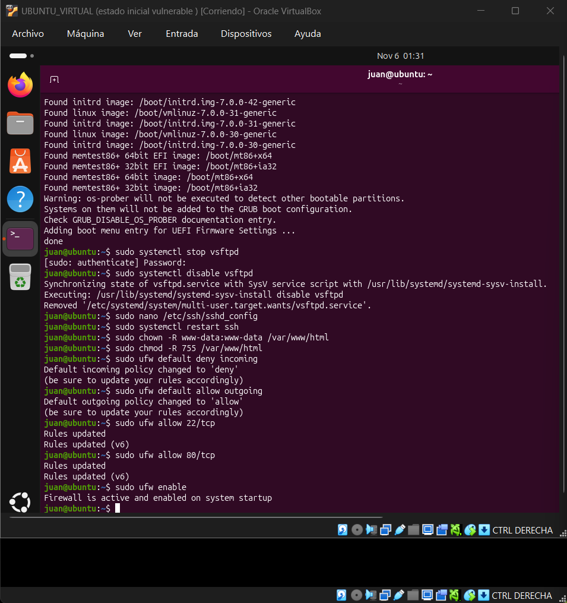
Comando: systemctl stop/disable vsftpd · nano sshd_config · systemctl restart ssh · chown/chmod · ufw …
Qué se observa: Se ven, en orden: stop y disable vsftpd (con «Removed … vsftpd.service»); nano /etc/ssh/sshd_config; systemctl restart ssh; chown -R www-data:www-data y chmod -R 755 /var/www/html; ufw default deny/allow, allow 22/tcp, allow 80/tcp («Rules updated» e «(v6)») y ufw enable → «Firewall is active and enabled on system startup». Arriba, el final de la actualización: update-grub encuentra initrd.img-7.0.0-42-generic, el kernel nuevo.
Qué demuestra: Las reglas de 22 y 80 se crean antes de activar UFW, de modo que no se pierde la administración remota ni el sitio web. El mensaje «enabled on system startup» indica que el firewall quedó configurado para arrancar con el sistema; se comprueba tras reiniciar en P10 (en vivo).
Ubuntu registra los accesos y los comandos privilegiados en /var/log/auth.log. Las dos consultas siguientes permiten localizar los eventos relevantes. El archivo contiene caracteres no imprimibles, por lo que grep necesita la opción -a (ver incidencia I04).
| Qué se busca | Comando |
|---|---|
| Accesos SSH aceptados y fallidos | sudo grep -a "sshd" /var/log/auth.log | tail -n 20 |
| Comandos ejecutados con sudo | sudo grep -a "root" /var/log/auth.log | tail -n 20 |
| Solo accesos exitosos | sudo grep -a "Accepted" /var/log/auth.log |
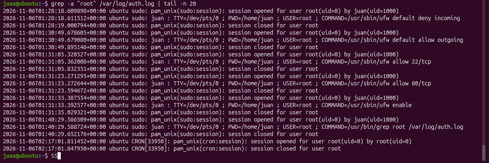
Comando: sudo grep -a "root" /var/log/auth.log | tail -n 20
Qué se observa: Cada sudo queda registrado con usuario, terminal, directorio y comando: juan : TTY=/dev/pts/0 ; USER=root ; COMMAND=/usr/sbin/ufw default deny incoming, … allow 22/tcp, … allow 80/tcp, … enable (01:28–01:31 UTC), con apertura y cierre de sesión pam_unix. También aparecen las tareas CRON de root.
Qué demuestra: Da trazabilidad: se puede reconstruir quién aplicó cada control y cuándo. Los registros usan hora UTC (Colombia es UTC−5).
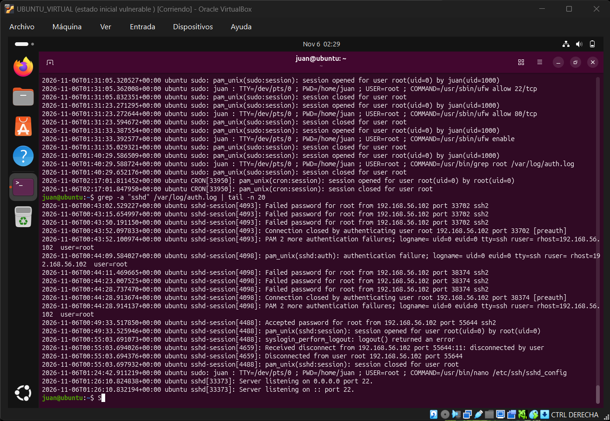
Comando: sudo grep -a "sshd" /var/log/auth.log | tail -n 20
Qué se observa: Seis líneas Failed password for root from 192.168.56.102 (00:43 y 00:44 UTC, tres por conexión), dos Connection closed by authenticating user root … [preauth], y luego Accepted password for root from 192.168.56.102 port 55644 ssh2 a las 00:49:33, con la sesión cerrada a las 00:55:03. Más abajo: nano /etc/ssh/sshd_config (01:24:42) y Server listening on 0.0.0.0 port 22 (01:26:10), el reinicio de SSH tras el cambio.
Qué demuestra: Permite localizar el evento sospechoso (acceso de root desde 192.168.56.102) y el cambio de configuración posterior. 00:49 UTC equivale a 19:49 hora local, que coincide con la captura E08.
Procedimiento breve. (1) Crear el archivo comprimido con el sitio web y las configuraciones críticas. (2) Verificar su contenido con tar -tzf respaldo_servidor.tar.gz. (3) Copiarlo fuera de la máquina virtual del servidor con scp desde Kali. (4) Comprobar la copia con sha256sum en ambos extremos. El respaldo se hace antes de cada cambio relevante y, en un servidor real, de forma programada.
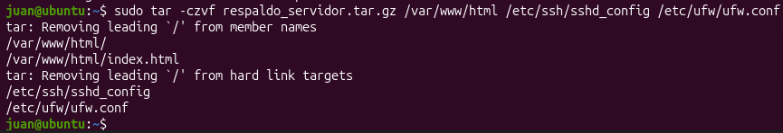
Comando: sudo tar -czvf respaldo_servidor.tar.gz /var/www/html /etc/ssh/sshd_config /etc/ufw/ufw.conf
Qué se observa: tar lista /var/www/html/, /var/www/html/index.html, /etc/ssh/sshd_config y /etc/ufw/ufw.conf. El aviso «Removing leading '/'» es normal: guarda rutas relativas.
Qué demuestra: Respalda el contenido web y las configuraciones críticas, ya con los controles aplicados.
▶ Verificación en vivo · P9 — Respaldo fuera de la VM del servidor
Dónde: Kali
Comando: scp juan@192.168.56.101:~/respaldo_servidor.tar.gz . ; ls -l respaldo_servidor.tar.gz
Resultado esperado: Barra de progreso del scp y el archivo respaldo_servidor.tar.gz presente en Kali (otra máquina).
Esta prueba se ejecuta en directo durante la sustentación, como exige la actividad; su captura se anexa a la carpeta de evidencias.
Para demostrar la recuperación se borra /var/www/html/index.html (simula un ataque o pérdida), se comprueba que el sitio deja de mostrarse y se restaura desde el respaldo con sudo tar -xzvf respaldo_servidor.tar.gz -C /.
Restaurar solo un archivo. Para no sobrescribir otras configuraciones, se puede extraer un único archivo indicando su ruta sin la barra inicial (así la guarda tar): sudo tar -xzvf respaldo_servidor.tar.gz -C / var/www/html/index.html. El contenido del respaldo se consulta con tar -tzf respaldo_servidor.tar.gz. Precaución: el respaldo debe ser posterior a la aplicación de los controles; restaurar uno tomado en el estado vulnerable devolvería PermitRootLogin yes y los permisos 777.
▶ Verificación en vivo · P7 — Pérdida simulada: sitio sin index.html
Dónde: Ubuntu + Kali
Comando: sudo rm /var/www/html/index.html y recargar http://192.168.56.101/
Resultado esperado: El navegador mostrando una lista vacía o un error en lugar de la página.
Esta prueba se ejecuta en directo durante la sustentación, como exige la actividad; su captura se anexa a la carpeta de evidencias.
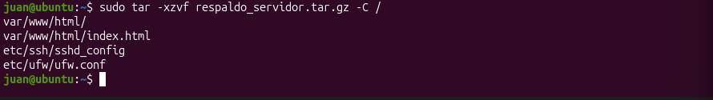
Comando: sudo tar -xzvf respaldo_servidor.tar.gz -C /
Qué se observa: tar extrae var/www/html/, var/www/html/index.html, etc/ssh/sshd_config y etc/ufw/ufw.conf en sus rutas originales (-C /).
Qué demuestra: El archivo de prueba (index.html) se recupera desde el respaldo. La secuencia completa borrar → sitio caído → restaurar → sitio de vuelta se documenta en P7 (en vivo) y P8 (en vivo).
▶ Verificación en vivo · P8 — Sitio recuperado tras la restauración
Dónde: Kali
Comando: (después de E16) recargar http://192.168.56.101/
Resultado esperado: La página de la organización otra vez funcionando: prueba de restauración exitosa.
Esta prueba se ejecuta en directo durante la sustentación, como exige la actividad; su captura se anexa a la carpeta de evidencias.
| Rol | Responsable | Función |
|---|---|---|
| Administrador del servidor | Juan Camilo Nieto Arboleda (cuenta juan) | Primer respondiente: confirma el evento en los registros, contiene (bloqueo en UFW, cierre de sesiones) y restaura desde el respaldo. |
| Responsable de seguridad | Juan Diego Vasquez | Decide la severidad, ordena aislar la máquina si hay compromiso y valida que los controles sigan activos. |
| Contacto de la organización | Gerencia de Café Montaña S.A.S. (contacto ficticio) | Recibe el reporte del incidente, autoriza ventanas de recuperación y comunica a los usuarios afectados. |
sudo grep -a "Accepted\|Failed" /var/log/auth.log | tail -n 30, last -n 10 y who. Anotar IP de origen, usuario y hora (UTC).sudo ufw insert 1 deny from <IP_SOSPECHOSA>; cerrar las sesiones activas; cambiar las claves de las cuentas implicadas. Si hay indicios de compromiso de root, desconectar la VM de la red.sudo cp -a /var/log/auth.log ~/auth_incidente.log) y tomar una instantánea de la VM antes de modificar nada.ls -ld /var/www/html) y la configuración efectiva (sudo sshd -T | grep permitrootlogin); restaurar desde el respaldo externo y aplicar las actualizaciones pendientes.La validación repite las pruebas iniciales desde Kali y comprueba los accesos permitidos y bloqueados, los permisos, la disponibilidad del sitio, la restauración y la persistencia de los controles después de reiniciar. En la columna «Estado», ✔ Evidenciado indica que existe captura de la prueba; ▶ En vivo indica que la prueba se ejecuta durante la sustentación (la actividad exige verificar el estado protegido en directo) y que aquí se documenta su comando y su resultado esperado.
| # | Prueba | Resultado esperado | Evidencia | Estado |
|---|---|---|---|---|
| 1 | SSH directo como root (bloqueado) | «Permission denied» aun con la clave correcta | E17 | ✔ Evidenciado |
| 2 | SSH del administrador (permitido) | Sesión iniciada como juan | P6 (en vivo) | ▶ En vivo |
| 3 | Sitio web disponible | HTTP 200 y página visible | P1 (en vivo) | ▶ En vivo |
| 4 | Puertos expuestos (Nmap) | Solo 22 y 80 abiertos | P2 (en vivo) | ▶ En vivo |
| 5 | Firewall | Activo; deniega entrante; permite 22 y 80 | E12, P3 | ✔ Evidenciado |
| 6 | Permisos del sitio | 755 con dueño www-data | P4 | ✔ Evidenciado |
| 7 | Configuración efectiva y servicios | permitrootlogin no; vsftpd inactivo; sin parches pendientes | P5 (en vivo) | ▶ En vivo |
| 8 | Restauración de un archivo | index.html recuperado y sitio de vuelta | E16, P7 (en vivo), P8 (en vivo) | ◐ Parcial · resto en vivo |
| 9 | Respaldo fuera de la VM | Copia del .tar.gz en Kali | P9 (en vivo) | ▶ En vivo |
| 10 | Persistencia tras reiniciar | Los controles siguen activos | P10 (en vivo) | ▶ En vivo |
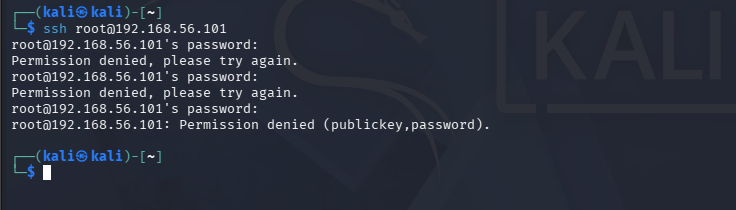
Comando: ssh root@192.168.56.101
Qué se observa: Desde Kali, tres solicitudes de contraseña terminan en «Permission denied (publickey,password)».
Qué demuestra: Con PermitRootLogin no el servidor rechaza el acceso directo de root. El mensaje es idéntico al de los intentos fallidos de E07, por lo que esta captura por sí sola no distingue entre una contraseña incorrecta y el bloqueo por configuración. La comprobación concluyente es la configuración efectiva sshd -T (evidencia P5 (en vivo)), que se muestra en vivo en la sustentación probando además con la contraseña correcta de root.
▶ Verificación en vivo · P6 — Acceso permitido: administrador legítimo por SSH
Dónde: Kali
Comando: ssh juan@192.168.56.101 'hostname; id'
Resultado esperado: Conexión exitosa con el usuario administrador (no root). Es el «acceso permitido» que pide la sustentación, frente al bloqueado de E17.
Esta prueba se ejecuta en directo durante la sustentación, como exige la actividad; su captura se anexa a la carpeta de evidencias.
▶ Verificación en vivo · P1 — Sitio web funcionando tras los controles
Dónde: Kali
Comando: Navegador en http://192.168.56.101/ (y curl -I http://192.168.56.101/ )
Resultado esperado: La página de la organización cargando y «HTTP/1.1 200 OK». Demuestra que los controles no afectaron el servicio.
Esta prueba se ejecuta en directo durante la sustentación, como exige la actividad; su captura se anexa a la carpeta de evidencias.
▶ Verificación en vivo · P2 — Nmap después de los controles
Dónde: Kali
Comando: nmap -sV -p- -T4 --max-retries 1 192.168.56.101 (script 05_validacion_kali.sh)
Resultado esperado: Solo 22/tcp (ssh) y 80/tcp (http) abiertos; el 21 ya no aparece abierto (filtered/closed) y el resto figura como filtered. Compárese con E06.
Esta prueba se ejecuta en directo durante la sustentación, como exige la actividad; su captura se anexa a la carpeta de evidencias.
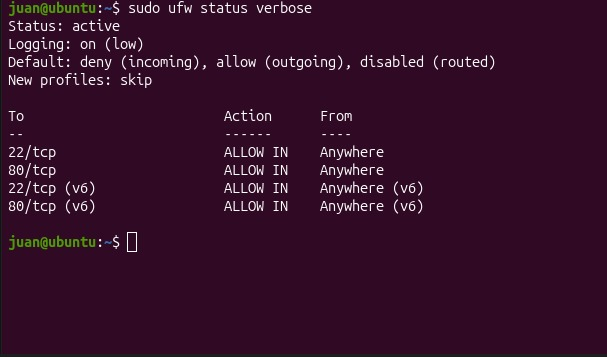
Comando: sudo ufw status verbose (script 04_validacion_ubuntu.sh)
Qué demuestra: «Status: active», «Default: deny (incoming), allow (outgoing)» y las reglas 22/tcp y 80/tcp en ALLOW IN.
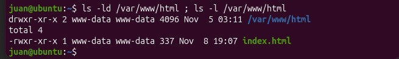
Comando: ls -ld /var/www/html ; ls -l /var/www/html
Qué demuestra: drwxr-xr-x … www-data www-data (755) en lugar de drwxrwxrwx (777).
▶ Verificación en vivo · P5 — Configuración efectiva de SSH, FTP inactivo y parches pendientes
Dónde: Ubuntu
Comando: sudo sshd -T | grep -i permitrootlogin ; systemctl is-active vsftpd ; apt list --upgradable | wc -l
Resultado esperado: permitrootlogin no, vsftpd inactive y cero (o casi cero) paquetes pendientes.
Esta prueba se ejecuta en directo durante la sustentación, como exige la actividad; su captura se anexa a la carpeta de evidencias.
▶ Verificación en vivo · P10 — Persistencia de los controles después de reiniciar
Dónde: Ubuntu + Kali
Comando: sudo reboot → iniciar sesión → bash 04_validacion_ubuntu.sh (y repetir P1 y P2 desde Kali)
Resultado esperado: Tras el reinicio: UFW sigue active, vsftpd inactive, permitrootlogin no y el sitio responde.
Esta prueba se ejecuta en directo durante la sustentación, como exige la actividad; su captura se anexa a la carpeta de evidencias.
| Hallazgo y riesgo | Evidencia inicial | Control aplicado | Prueba final y resultado |
|---|---|---|---|
| H1 · Login SSH directo como root. Cualquier equipo de la red puede probar contraseñas contra la cuenta de máximo privilegio; un acierto da control total. Prioridad alta. | Consola root@ubuntu obtenida desde Kali (E08). Registro: seis Failed password for root y un Accepted password for root desde 192.168.56.102 (E14). |
C3: PermitRootLogin no y reinicio de ssh (E10, E12). La administración pasa a un usuario sin privilegios con sudo. |
ssh root@… → «Permission denied» (E17). En vivo: configuración efectiva permitrootlogin no (P5 (en vivo)) y acceso permitido de juan (P6 (en vivo)). |
| H2 · Sitio web con permisos 777. Cualquier cuenta local o proceso comprometido puede modificar o borrar el sitio. Prioridad alta. | chmod -R 777 /var/www/html (E03). |
C4: chown -R www-data:www-data y chmod -R 755 (E12). |
Permisos drwxr-xr-x www-data (P4); archivo recuperable desde el respaldo (E16). En vivo: sitio funcionando (P1 (en vivo)). |
| H3 · Firewall desactivado. Todo servicio que escuche queda expuesto sin filtro. Prioridad alta. | ufw disable (E03). Nmap: puertos 21, 22 y 80 abiertos y el resto cerrado con reset, sin filtrado (E06). |
C5: deny incoming, allow outgoing, allow 22/tcp, allow 80/tcp, enable (E11, E12). |
ufw status verbose: activo (P3). En vivo: Nmap solo debe ver 22 y 80 (P2 (en vivo)) y los controles deben persistir tras reiniciar (P10 (en vivo)). |
| H4 · Servicio FTP innecesario (vsftpd). Amplía la superficie de ataque y transmite datos sin cifrar. Prioridad media. | Instalación de vsftpd (E04). Nmap: 21/tcp open ftp vsftpd 3.0.5 (E06). |
C2: systemctl stop y disable vsftpd (E12). Puerto 21 además bloqueado por UFW. |
En vivo: el puerto 21 no debe aparecer abierto (P2 (en vivo)) y systemctl is-active vsftpd debe responder inactive (P5 (en vivo)). |
| H5 · Sistema sin actualizar. Vulnerabilidades conocidas sin corregir. Prioridad alta. | Banner de acceso: «227 updates can be applied immediately · 133 … security updates» (E08). | C1: apt update && apt upgrade -y (E09, E12). Instala el kernel 7.0.0-42. |
En vivo: conteo de paquetes pendientes (P5 (en vivo)) y kernel activo tras reiniciar (P10 (en vivo)). |
auth.log permiten reconstruir tanto el acceso inicial como los cambios de configuración (E13, E14), lo que sirve para la respuesta a incidentes.tar permitió recuperar el archivo de prueba (E16). Una copia fuera de la VM es indispensable: un respaldo guardado solo en el servidor se pierde junto con él.| Riesgo o limitación | Mitigación recomendada |
|---|---|
SSH sigue aceptando contraseñas y no hay protección contra fuerza bruta sobre el usuario juan. | Autenticación por clave pública (PasswordAuthentication no), AllowUsers juan, MaxAuthTries bajo y fail2ban o ufw limit 22/tcp. |
La regla allow 22/tcp admite conexiones desde cualquier IP de la red. | Limitar el origen: ufw allow from <IP_admin> to any port 22 proto tcp. |
| El sitio se sirve por HTTP sin cifrar. | HTTPS con certificado TLS (autofirmado en laboratorio; Let's Encrypt en producción). |
| Los archivos web tienen permisos 755, incluyendo el bit de ejecución que no necesitan. | 644 para archivos y 755 para directorios. |
El respaldo es manual, sin cifrar y con una sola copia externa. Además, /etc/ufw/ufw.conf solo guarda ENABLED/LOGLEVEL: las reglas están en user.rules y user6.rules, que la ejecución documentada (E15) no incluyó. | Programar el respaldo con cron, cifrarlo con gpg, verificar con sha256sum, mantener varias copias e incluir las reglas de UFW (ya incluidas en el script 03). |
| La validación final completa (Nmap posterior, acceso permitido, sitio, copia externa y reinicio) no quedó capturada: la máquina virtual se saturó durante la toma de evidencias. | Se ejecuta en directo en la sustentación y se anexan las capturas a la carpeta de evidencias; el procedimiento y los scripts 04 y 05 permiten repetirla en pocos minutos. |
| El servidor usa Ubuntu con entorno de escritorio, que añade paquetes y superficie de ataque frente a Ubuntu Server. | En un entorno real, usar Ubuntu Server LTS y la instalación mínima. |
| Las actualizaciones se aplicaron manualmente; el kernel nuevo requiere reiniciar. | Activar unattended-upgrades y definir una ventana de mantenimiento. |
| No hay monitoreo ni alertas: los registros se revisan a mano. | Centralizar registros y alertar sobre intentos fallidos repetidos. |
| El alcance fue la configuración del sistema; no se evaluó la seguridad de una aplicación web ni vulnerabilidades específicas de Apache. | Ampliar el diagnóstico con análisis de la aplicación y escaneo de vulnerabilidades en un entorno autorizado. |
Documentación oficial y guías de referencia en las que se apoyan los controles y los comandos usados en este trabajo.
Los scripts están en la carpeta scripts/ y reproducen exactamente los comandos de las secciones 3 a 7. Solo deben ejecutarse en las máquinas virtuales del laboratorio aislado.
ip a y anotar la IP (el servidor recibe IP por DHCP: verificarla antes de cada sesión).bash 01_estado_inicial_vulnerable.sh. Apagar con sudo systemctl poweroff -i y tomar la instantánea «estado inicial vulnerable».www-data, permisos 755): bash 06_pagina_organizacion.sh. Conviene hacerlo antes de generar el respaldo.nmap -sV -p- 192.168.56.101 y ssh root@192.168.56.101.bash 02_controles.sh (el paso C1 necesita Internet temporal, ver incidencia I03).bash 03_respaldo_restauracion.sh; en Kali, la copia externa con scp.bash 05_validacion_kali.sh. En el servidor: bash 04_validacion_ubuntu.sh; luego sudo reboot y repetir ambos para comprobar la persistencia.01_estado_inicial_vulnerable.sh#!/usr/bin/env bash
# =====================================================================
# 01 - ESTADO INICIAL VULNERABLE (solo para la VM del laboratorio aislado)
# Reproduce las debilidades documentadas en el diagnostico (H1-H5).
# NO ejecutar en equipos reales ni institucionales.
# Ejecutar en el servidor Ubuntu con un usuario que tenga sudo.
# =====================================================================
set -u
echo "[1/5] Instalando servicios: OpenSSH, Apache y FTP..."
sudo apt update
sudo apt install -y openssh-server apache2 vsftpd
# Pagina sencilla de la organizacion ficticia (Cafe Montana S.A.S.)
sudo tee /var/www/html/index.html >/dev/null <<'HTML'
<!doctype html>
<html lang="es">
<head>
<meta charset="utf-8">
<meta name="viewport" content="width=device-width, initial-scale=1">
<title>Café Montaña S.A.S.</title>
<style>
body{font-family:Arial,sans-serif;max-width:720px;margin:40px auto;padding:0 16px;color:#222}
h1{color:#5b3a1e}
footer{margin-top:40px;font-size:.85em;color:#666}
</style>
</head>
<body>
<h1>Café Montaña S.A.S.</h1>
<p>Café de origen colombiano, tostado en la montaña.</p>
<h2>Productos</h2>
<ul><li>Café molido 500 g</li><li>Café en grano 1 kg</li><li>Café de origen único</li></ul>
<h2>Contacto</h2>
<p>contacto@cafemontana.example · Tel. 000 000 0000 (datos ficticios)</p>
<footer>Sitio de prueba de un laboratorio académico. Todos los datos son ficticios.</footer>
</body>
</html>
HTML
echo "[2/5] H1 - Permitir login SSH directo como root..."
sudo sed -i 's/^#\?PermitRootLogin.*/PermitRootLogin yes/' /etc/ssh/sshd_config
echo " Defina una clave de laboratorio para root (no se escribe en el informe): sudo passwd root"
sudo systemctl restart ssh
echo "[3/5] H2 - Permisos 777 en el sitio web..."
sudo chmod -R 777 /var/www/html
echo "[4/5] H3 - Firewall desactivado..."
sudo ufw disable
echo "[5/5] H4 - FTP (vsftpd) queda activo por la instalacion, puerto 21/tcp:"
systemctl is-active vsftpd
# H5 (sistema sin actualizar) se da por defecto: NO se ejecuta apt upgrade en este paso.
echo "Listo. Apague la VM y tome la instantanea 'estado inicial vulnerable' en VirtualBox."
02_controles.sh#!/usr/bin/env bash # ===================================================================== # 02 - CONTROLES DE SEGURIDAD (C1-C5) - ejecutar en el servidor Ubuntu # Cada bloque responde a un hallazgo del diagnostico. # ===================================================================== set -u echo "[C1] (H5) Actualizando el sistema. Requiere salida a Internet temporal." sudo apt update && sudo apt upgrade -y echo "[C2] (H4) Deshabilitando el servicio innecesario vsftpd..." sudo systemctl stop vsftpd && sudo systemctl disable vsftpd echo "[C3] (H1) Bloqueando el login SSH directo como root..." sudo cp -a /etc/ssh/sshd_config /etc/ssh/sshd_config.bak # copia previa por si hay que revertir sudo sed -i 's/^#\?PermitRootLogin.*/PermitRootLogin no/' /etc/ssh/sshd_config sudo sshd -t && sudo systemctl restart ssh # sshd -t valida la sintaxis antes de reiniciar echo "[C4] (H2) Corrigiendo permisos del sitio web..." sudo chown -R www-data:www-data /var/www/html sudo chmod -R 755 /var/www/html echo "[C5] (H3) Configurando el firewall UFW..." sudo ufw default deny incoming sudo ufw default allow outgoing sudo ufw allow 22/tcp # administracion SSH (ANTES de activar UFW, para no perder el acceso) sudo ufw allow 80/tcp # sitio web HTTP sudo ufw --force enable sudo ufw status verbose
03_respaldo_restauracion.sh#!/usr/bin/env bash # ===================================================================== # 03 - RESPALDO Y RESTAURACION - ejecutar en el servidor Ubuntu # La copia EXTERNA (fuera de la VM del servidor) se hace desde Kali: ver paso R4. # ===================================================================== set -u cd ~ || exit 1 echo "[R1] Creando el respaldo (sitio web + configuraciones criticas)..." # Nota: /etc/ufw/ufw.conf solo guarda ENABLED/LOGLEVEL; las reglas estan en user.rules y user6.rules. sudo tar -czvf respaldo_servidor.tar.gz \ /var/www/html /etc/ssh/sshd_config \ /etc/ufw/ufw.conf /etc/ufw/user.rules /etc/ufw/user6.rules ls -l respaldo_servidor.tar.gz echo "[R2] Simulando perdida de datos: se borra el archivo de prueba..." sudo rm /var/www/html/index.html echo -n "Titulo de la pagina sin index.html (si Apache lista el directorio, el codigo HTTP sigue siendo 200): "; curl -s http://localhost/ | grep -o -m1 -E "<title>[^<]*</title>" echo "[R3] Restaurando desde el respaldo (-C / extrae en las rutas originales)..." sudo tar -xzvf respaldo_servidor.tar.gz -C / echo -n "Titulo de la pagina tras restaurar: "; curl -s http://localhost/ | grep -o -m1 -E "<title>[^<]*</title>" ls -l /var/www/html echo "[R4] Copia externa: ejecutar DESDE KALI ->" echo " scp juan@192.168.56.101:~/respaldo_servidor.tar.gz ."
04_validacion_ubuntu.sh#!/usr/bin/env bash
# =====================================================================
# 04 - VALIDACION FINAL EN EL SERVIDOR UBUNTU
# Genera las evidencias P3, P4 y P5. Para P10 (persistencia): ejecutar
# sudo reboot
# y, tras volver a iniciar sesion, correr este mismo script otra vez.
# Guarda ademas una copia en texto en ~/validacion_ubuntu.txt
# =====================================================================
OUT=~/validacion_ubuntu.txt
{
echo "=== $(date '+%F %T %Z') | $(hostname) | $(lsb_release -ds) | kernel $(uname -r) ==="
echo; echo "### P3 - Firewall (UFW)"
sudo ufw status verbose
echo; echo "### P4 - Permisos del sitio web (esperado: 755, dueno www-data)"
ls -ld /var/www/html
ls -l /var/www/html
echo; echo "### P5 - Configuracion efectiva de SSH, estado de FTP y actualizaciones"
sudo sshd -T | grep -Ei '^(permitrootlogin|passwordauthentication|maxauthtries)'
echo -n "vsftpd activo: "; systemctl is-active vsftpd
echo -n "vsftpd habilitado en el arranque: "; systemctl is-enabled vsftpd
echo -n "Paquetes con actualizacion pendiente: "; apt list --upgradable 2>/dev/null | tail -n +2 | wc -l
echo; echo "### Puertos en escucha"
sudo ss -tlnp
echo; echo "### Apache"
systemctl is-active apache2
curl -sI http://localhost | head -n 1
} 2>&1 | tee "$OUT"
05_validacion_kali.sh#!/usr/bin/env bash
# =====================================================================
# 05 - VALIDACION FINAL DESDE KALI (maquina de pruebas)
# Genera las evidencias P1, P2, P6 y P9, y repite la prueba E17.
# Uso: bash 05_validacion_kali.sh [IP_SERVIDOR] [USUARIO_ADMIN]
# =====================================================================
TARGET="${1:-192.168.56.101}"
ADMIN="${2:-juan}"
echo "### P2 - Nmap tras los controles (mismo escaneo que E06)"
echo " -T4 y --max-retries 1 solo acortan el tiempo: con UFW descartando paquetes, -p- puede tardar muchos minutos."
nmap -sV -p- -T4 --max-retries 1 "$TARGET"
echo; echo "### P1 - Sitio web disponible"
curl -sI "http://$TARGET/" | head -n 1
echo "(Abra tambien http://$TARGET/ en el navegador de Kali y capture la pagina)"
echo; echo "### E17 - Acceso BLOQUEADO: root por SSH (use la MISMA clave de root que dio acceso en E08)"
ssh -o PubkeyAuthentication=no -o NumberOfPasswordPrompts=1 "root@$TARGET" 'echo SI_ENTRO_ROOT'
echo; echo "### P6 - Acceso PERMITIDO: usuario administrador"
ssh "$ADMIN@$TARGET" 'echo "Conectado como: $(whoami) en $(hostname)"; id'
echo; echo "### P9 - Respaldo FUERA de la VM del servidor"
scp "$ADMIN@$TARGET:~/respaldo_servidor.tar.gz" .
ls -l respaldo_servidor.tar.gz
sha256sum respaldo_servidor.tar.gz
06_pagina_organizacion.sh#!/usr/bin/env bash
# =====================================================================
# 06 - PAGINA DE LA ORGANIZACION FICTICIA (Cafe Montana S.A.S.)
# Crea (o restablece) /var/www/html/index.html con dueno www-data y
# permisos 755, es decir, en el estado PROTEGIDO.
# Ejecutar en el servidor Ubuntu ANTES de generar el respaldo (script 03).
# =====================================================================
set -u
sudo tee /var/www/html/index.html >/dev/null <<'HTML'
<!doctype html>
<html lang="es">
<head>
<meta charset="utf-8">
<meta name="viewport" content="width=device-width, initial-scale=1">
<title>Café Montaña S.A.S.</title>
<style>
body{font-family:Arial,sans-serif;max-width:720px;margin:40px auto;padding:0 16px;color:#222}
h1{color:#5b3a1e}
footer{margin-top:40px;font-size:.85em;color:#666}
</style>
</head>
<body>
<h1>Café Montaña S.A.S.</h1>
<p>Café de origen colombiano, tostado en la montaña.</p>
<h2>Productos</h2>
<ul><li>Café molido 500 g</li><li>Café en grano 1 kg</li><li>Café de origen único</li></ul>
<h2>Contacto</h2>
<p>contacto@cafemontana.example · Tel. 000 000 0000 (datos ficticios)</p>
<footer>Sitio de prueba de un laboratorio académico. Todos los datos son ficticios.</footer>
</body>
</html>
HTML
sudo chown -R www-data:www-data /var/www/html
sudo chmod -R 755 /var/www/html
echo "Pagina creada. Permisos actuales:"
ls -ld /var/www/html
ls -l /var/www/html
echo -n "Titulo servido por Apache: "
curl -s http://localhost/ | grep -o -m1 -E "<title>[^<]*</title>"
Registro de los errores que surgieron y cómo se resolvieron. Las capturas están en evidencias/incidencias/.
| ID | Qué ocurrió | Causa | Solución |
|---|---|---|---|
| I01 | nano abrió un archivo vacío al editar la configuración de SSH. | Un espacio dentro de la ruta (/etc/ssh/ sshd_config). | sudo nano /etc/ssh/sshd_config |
| I02 | sudo poweroff falló: «active block inhibitor». | Una sesión gráfica abierta inhibe el apagado. | sudo systemctl poweroff -i (ignora los inhibidores). |
| I03 | apt upgrade no pudo descargar paquetes: «Temporary failure resolving». | La red solo-anfitrión no tiene Internet ni DNS. | Se habilitó salida a Internet de forma temporal solo para actualizar, se repitió el comando y la actualización avanzó (E09); después el servidor volvió a la red aislada. En la sustentación se explica que este paso es la única excepción al aislamiento. |
| I04 | grep devolvió «binary file matches». | auth.log contiene caracteres no imprimibles. | Usar grep -a. |
| I05 | tar: «Cannot stat: No such file or directory». | Ruta con mayúscula (/etc/Ufw/…) y rutas pegadas sin espacio; Linux distingue mayúsculas. | Escribir /etc/ufw/ufw.conf y separar cada ruta con un espacio. |
| I06 | tar: «Cannot stat» sobre /var/www/html/etc/ssh/sshd_config. | Falta el espacio entre /var/www/html y /etc/ssh/sshd_config. | Separar las rutas. |
| I07 | tar: «You may not specify more than one '-Acdtrux'». | -c (crear) en vez de -C (cambiar de directorio) junto a -x. | sudo tar -xzvf respaldo_servidor.tar.gz -C / |
| I08 | scp desde Kali: «No route to host». El comando también usaba respaldo.tar.gz y no respaldo_servidor.tar.gz. | Error de red (no del nombre del archivo). | Kali no alcanzaba al servidor en ese momento (la IP del servidor es por DHCP y puede cambiar). Se comprobó la IP con <code>ip a</code>, se verificó la conectividad y se repitió el comando con el nombre correcto, <code>respaldo_servidor.tar.gz</code>. El resultado exitoso está en P9. |
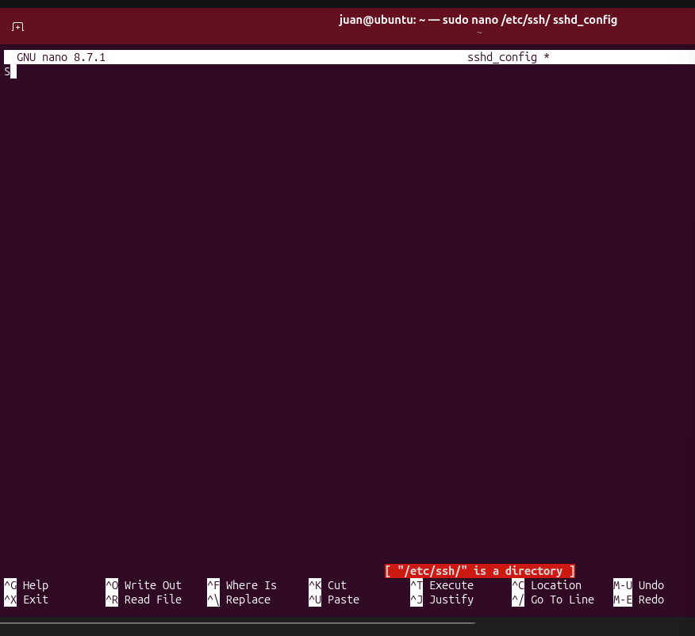
Qué se observa: sudo nano /etc/ssh/ sshd_config → nano abre un archivo vacío y avisa «"/etc/ssh/" is a directory».
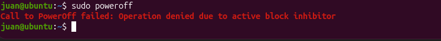
Qué se observa: sudo poweroff → «Call to PowerOff failed: Operation denied due to active block inhibitor».
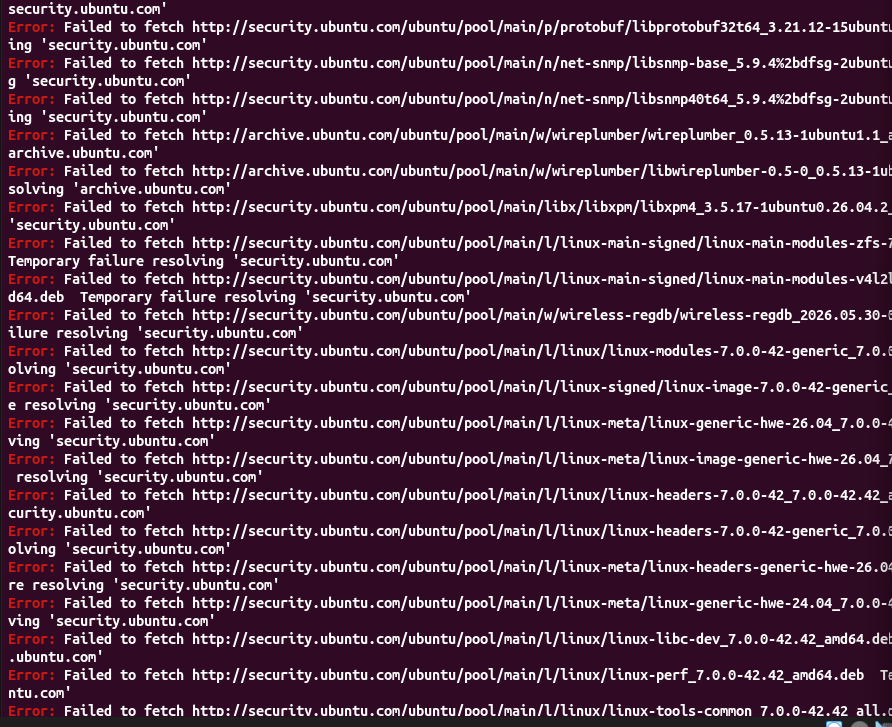
Qué se observa: Decenas de «Error: Failed to fetch … Temporary failure resolving 'security.ubuntu.com'».
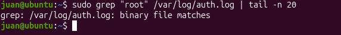
Qué se observa: sudo grep "root" /var/log/auth.log | tail -n 20 → «grep: /var/log/auth.log: binary file matches».
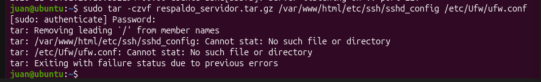
Qué se observa: … /var/www/html/etc/ssh/sshd_config /etc/Ufw/ufw.conf → «Cannot stat: No such file or directory».
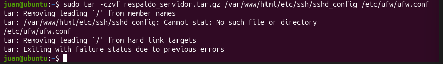
Qué se observa: … /var/www/html/etc/ssh/sshd_config pegado en una sola ruta → «Cannot stat».
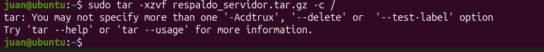
Qué se observa: sudo tar -xzvf respaldo_servidor.tar.gz -c / → «You may not specify more than one '-Acdtrux'…».
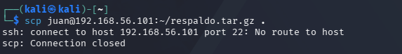
Qué se observa: scp juan@192.168.56.101:~/respaldo.tar.gz . → «ssh: connect to host 192.168.56.101 port 22: No route to host».
| ID | Archivo | Contenido | Figura |
|---|---|---|---|
| E01 | evidencias/E01_ip_servidor_ubuntu.png | Dirección IP del servidor Ubuntu | 6 |
| E02 | evidencias/E02_instalacion_openssh_server.png | Instalación de OpenSSH Server | 1 |
| E03 | evidencias/E03_apache_permisos777_firewall_apagado.png | Estado inicial: Apache instalado, permisos 777 y firewall apagado | 2 |
| E04 | evidencias/E04_instalacion_vsftpd_ftp.png | Servicio innecesario: instalación de vsftpd | 3 |
| E05 | evidencias/E05_instantanea_estado_inicial_vulnerable.png | Instantánea del estado inicial vulnerable | 4 |
| E05b | evidencias/E05b_detalle_instantanea.png | Detalle ampliado de la instantánea | 5 |
| E06 | evidencias/E06_nmap_inicial_puertos_21_22_80.png | Diagnóstico con Nmap sobre el estado inicial | 7 |
| E07 | evidencias/E07_ssh_root_intentos_fallidos.png | Intentos de acceso SSH como root con contraseña incorrecta | 8 |
| E08 | evidencias/E08_ssh_root_acceso_exitoso_inicial.png | Acceso no autorizado exitoso como root (estado inicial) | 9 |
| E09 | evidencias/E09_control1_apt_upgrade_en_curso.png | Control C1: actualización del sistema en curso | 10 |
| E10 | evidencias/E10_control3_sshd_config_permitrootlogin_no.png | Control C3: PermitRootLogin no en sshd_config | 11 |
| E11 | evidencias/E11_control5_ufw_default_deny.png | Control C5: política de entrada por defecto «deny» | 12 |
| E12 | evidencias/E12_controles_2_a_5_consolidado.png | Controles C2 a C5 aplicados en secuencia | 13 |
| E13 | evidencias/E13_log_auth_sudo_comandos_root.png | Registro de auditoría de comandos privilegiados | 14 |
| E14 | evidencias/E14_log_auth_sshd_failed_accepted.png | Registro de autenticación SSH: intentos fallidos y acceso aceptado | 15 |
| E15 | evidencias/E15_respaldo_tar_creado.png | Creación del respaldo con tar | 16 |
| E16 | evidencias/E16_restauracion_tar_extraido.png | Restauración desde el respaldo | 19 |
| E17 | evidencias/E17_validacion_ssh_root_denegado.png | Validación: acceso SSH como root rechazado tras los controles | 21 |
| P1 | — (en vivo) | Sitio web funcionando tras los controles | — |
| P2 | — (en vivo) | Nmap después de los controles | — |
| P3 | evidencias/pendientes/P3_ufw_status.png | Firewall UFW activo y sus reglas | 25 |
| P4 | evidencias/pendientes/P4_permisos_755.png | Permisos corregidos del sitio web | 26 |
| P5 | — (en vivo) | Configuración efectiva de SSH, FTP inactivo y parches pendientes | — |
| P6 | — (en vivo) | Acceso permitido: administrador legítimo por SSH | — |
| P7 | — (en vivo) | Pérdida simulada: sitio sin index.html | — |
| P8 | — (en vivo) | Sitio recuperado tras la restauración | — |
| P9 | — (en vivo) | Respaldo fuera de la VM del servidor | — |
| P10 | — (en vivo) | Persistencia de los controles después de reiniciar | — |
| I01 | evidencias/incidencias/I01_nano_etc_ssh_es_un_directorio.png | nano no abre la ruta con un espacio | 29 |
| I02 | evidencias/incidencias/I02_poweroff_bloqueado_por_inhibidor.png | El apagado normal es bloqueado | 30 |
| I03 | evidencias/incidencias/I03_apt_upgrade_sin_dns.png | apt upgrade sin resolución de nombres | 31 |
| I04 | evidencias/incidencias/I04_grep_auth_log_binario.png | grep sobre auth.log devuelve «binary file matches» | 32 |
| I05 | evidencias/incidencias/I05_tar_error_ruta_ufw_mayuscula.png | tar con ruta mal escrita (mayúscula y espacio) | 33 |
| I06 | evidencias/incidencias/I06_tar_error_falta_espacio_en_ruta.png | tar con falta de espacio entre dos rutas | 34 |
| I07 | evidencias/incidencias/I07_tar_extraer_opcion_c_minuscula.png | tar -xzvf con la opción -c en minúscula | 35 |
| I08 | evidencias/incidencias/I08_scp_no_route_to_host.png | scp desde Kali sin ruta al servidor | 36 |